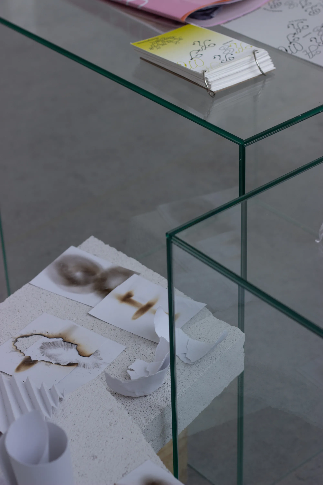
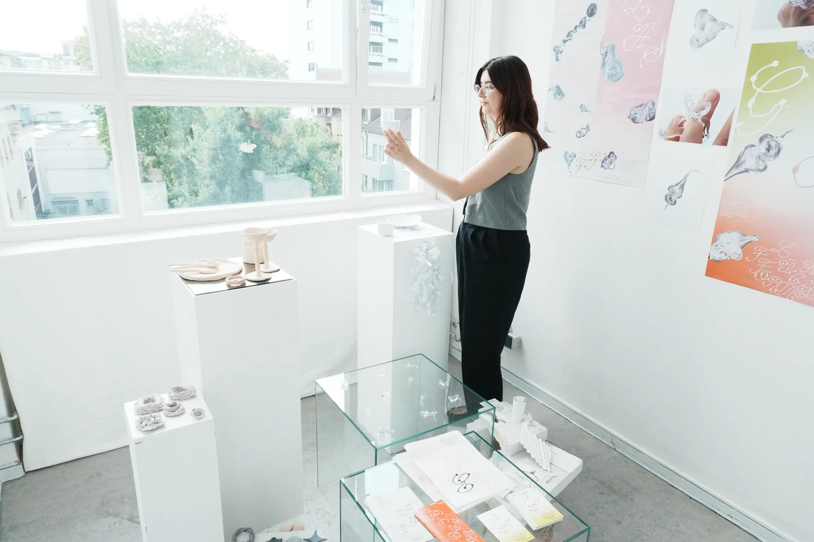
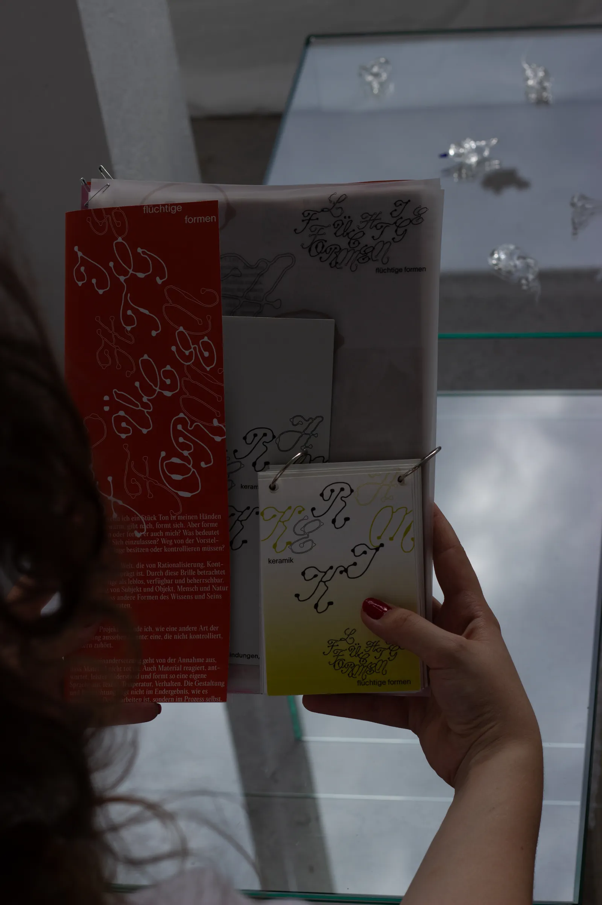
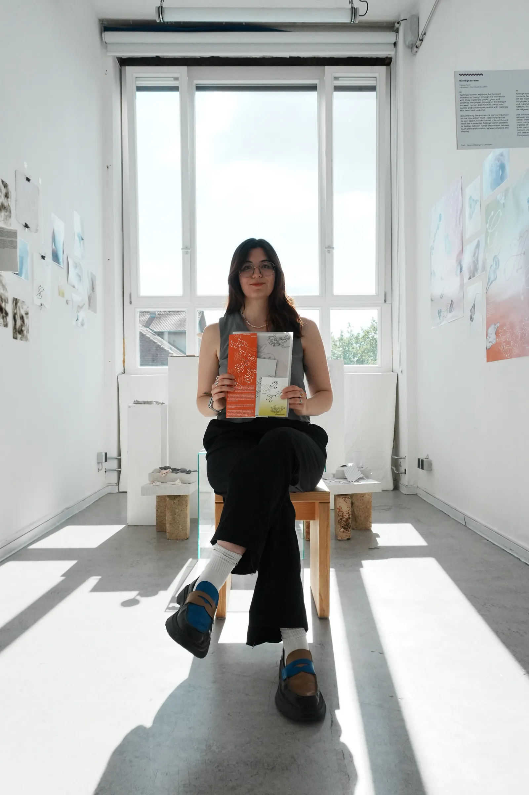

Flüchtige Formen
A material study of paper, glass and clay as partners that respond rather than obey.
- Year
- 2025
- Context
- Future of Making I, M.A. Design & Future Making, Pforzheim University; supervised by Prof. Christine Lüdeke
- Team
- solo project
- Role
- research, making, documentation, design of the print bundle
- Tools
- paper, borosilikate glass (flameworking), ceramics, fire, water

01 / Dialogue
Flüchtige Formen (Fleeting Forms) explores the transient moments of making through an experimental encounter with three materials: paper, glass and clay. At its center is the dialogue between human and material: away from control, towards a partnership with materials that react and answer.

02 / Encounters
For each material there are three encounters, nine in total, each starting without a fixed goal and following intuition. Paper is torn, folded, dissolved in water and drawn on with fire. Glass is cut and blown in the flame, with the maker's own breath as the tool. Clay is built by hand, and at one point pressed through a syringe, turning the maker into a human clay 3D printer. Failure, cracks and burns are part of the findings: attention to ephemeral processes, not mastery, leads to a deeper understanding of material.
03 / Print bundle
The documentation is a bundle of five prints, each on its own paper and in its own format: glossy paper, tracing paper, a folded A2 poster, a sketchpad on thick cardboard and a closing booklet. Together they hold what cannot be fixed: the experience of making.


04 / Exhibitions & links
Exhibitions & presentations
- Final presentation, 26 June 2025
- Werkschau Pforzheim, July 2025: print bundle and objects